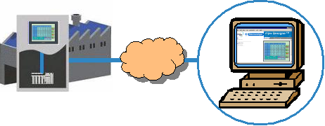

|
|
|
|
|
|
|
|
Web Gate allows a target machine to act as a web server. When Web Gate is enabled on a target, a user can connect to the target through a browser on a remote PC. Depending the Web Gate setup, you can read and write data on the target machine from the remote PC. See below for Web Gate Features and the Web Gate Setup Requirements.
See Appendix 5 Hardware Specifications, for the list of targets that support Web Gate.
See Section 23.2.1, Types of Web Gate Connections for a list of supported connections.

Robust
Security
Security allows you to limit access to the Web Server and Web Gate
based on a remote PC's IP addresses or through passwords. Using security,
you can also limit variable read and write access for certain security
groups. For information on variable read/write access for security
groups, see Section 4.8.2.4, Protecting
Web Server/Web Gate from Unauthorized Users. For password security,
see Section 4.8.2.4, Protecting
Web Server/Web Gate Access from Unauthorized Users. For IP Access
Control, see Section 23.2.3.2, Access
Control Settings.
Web
Server Capability
The web server allows the target machine to share its data with a remote
PC across the corporate LAN or the Internet.
Exclusive
Input
Exclusive Input prevents simultaneous inputs to the same variable.
With this feature you can stop other target machines from changing
the value of variables that you're working on in the remote PC. See
Section 22.2, Setting
Up Exclusive Input Relationships.
Data
Sharing
Data Sharing enables you to share data from target to target and from
target to a remote PC with a Web Gate client. Each target can have
a set of shared variables. A client PC can access these variables
at run time, as long as the target is set up with Web Gate, is accessible
on a network or LAN, the target is set up to share its data, and the
logged in security users have read/write access. For information on
read/write access for security users, see Section 4.8.2.4, Protecting
Web Server/Web Gate from Unauthorized Users. For more information
on data sharing, see Section 22.1, Sharing
Data Between Tablets, Smartphones, and Target Machines.
Synchronization
When a target and remote PC are synchronized, changing the panel display
on the target also changes the panel on the remote PC. Synchronization
is enabled from Web Gate on the remote PC. See Section 23.2.8, Web Gate Operations:
Synchronizing Web Gate with a Target.

Web Gate requires you to set up the following:
Web
Gate Client Files
Web Gate requires client files to be installed on the client PC. In
most cases, Web Gate Client files automatically install when a client
PC connects to the target Machine through Web Gate. However, in some
cases, Web Gate Client files have to be manually installed on the
Client PC. For more information, see Section 23.2.5.1, Setting
Up a Remote PC to Use Web Gate.
Target
Machine Supports Ethernet
The target machine must support Ethernet connections in order for Web
Gate to connect.
Web
Access Settings
Define the Web Access settings for: Access Port, Initial Panel ID,
and IP Address Restrictions. See Section 23.2.3, Web
Gate Settings.
Web
Gate features
Set up the a target's publish settings for Panels, Popup Windows, Actions
and set up your target's variables to be shared with the remote PC.
See Section 23.2.4, Setting Up a Target
for Web Gate Monitoring.
The
remote PC for Web Gate Monitoring
To perform remote monitoring, the remote PC only needs a browser and
the Vijeo-Designer Web Gate ActiveX control. See Section 23.2.5, Setting Up a Remote PC to Use Web Gate.
Web Gate Security
When target security is enabled, security groups must be set up with
read/write access and Web Gate security must be enabled so that users
can read and write to variables on the Web Gate client. When target
security is disabled, only security groups need to be set up with
read/write access to be able to read and write to variables from the
Web Gate client. For more information on variable read/write access,
see Section 4.8.2.4, Protecting
Web Server/Web Gate from Unauthorized Users.

Be aware of Web Gate's important key points. See Section 23.2.10, Web Gate and Web Server Key Points.
We recommend you use Microsoft® Internet Explorer as your browser.
Do not use Momentary ON switch in Web Gate, if you use Tablet with Windows 8.1 Momentary switch in Web Gate does not work with this platform.